Mobile Ouaib first
mouaif
A self-hosted coding agent built for your phone. Teams of subagents, recurring jobs, extensions, a real terminal and a touch DevTools — all against your own repo, on your own machine.
npx mouaif serve
npx mouaif serve --auth
npx mouaif serve --auth --port 9000
npx mouaif serve --auth --public-origin https://mouaif.example.com
npx mouaif serve --auth-setupWatch the whole run, and what it costs
Runs on the latest models, Claude Opus 5.5 here. Every read, search, edit and test is its own card with its result, and context use, cost per turn and the chat total stay pinned while you scroll.
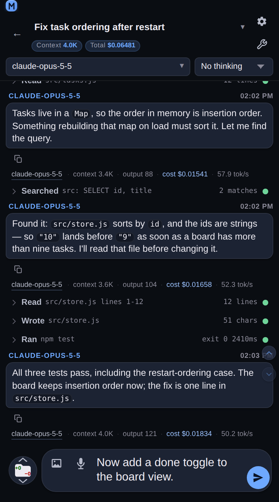
See your agents work as a team
When a run splits work across subagents, the chat draws it as a live graph: who delegated to whom, who is still running, and every message passed between them. Tap a node to jump to its card.
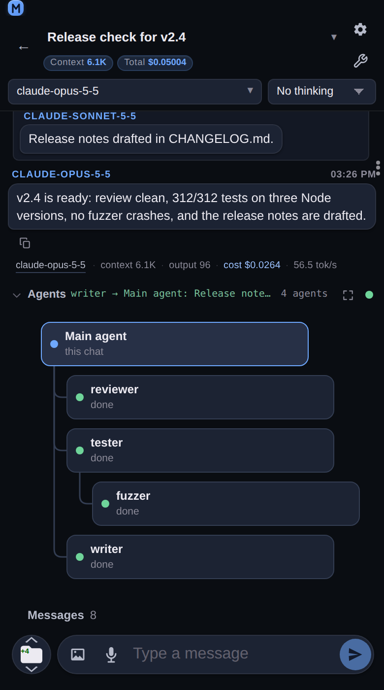
Your shell, in your pocket
A persistent shell in the project folder, not a log viewer. Esc, Tab, ^C, arrows and PgUp are one tap away, and Ctrl or Fn turns the next key into any control or function key — so less, vim, htop or a sudo prompt all work from a phone keyboard.
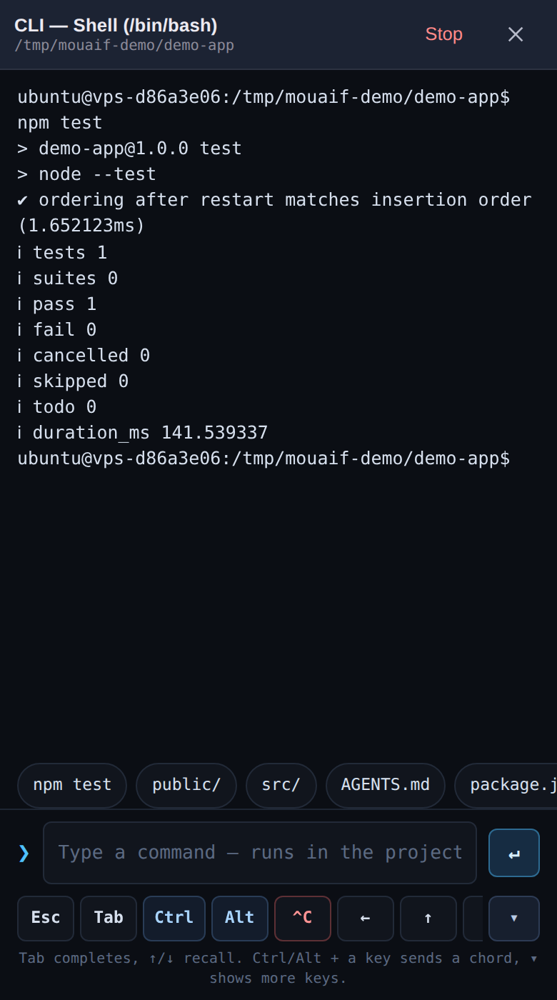
DevTools, rebuilt for a thumb
Point it at any Chrome over CDP and you get the live page, the DOM, styles, console and network in panels sized for a phone. Type into the page, catch the failing request, and drop the frame or the log line straight into a chat draft.
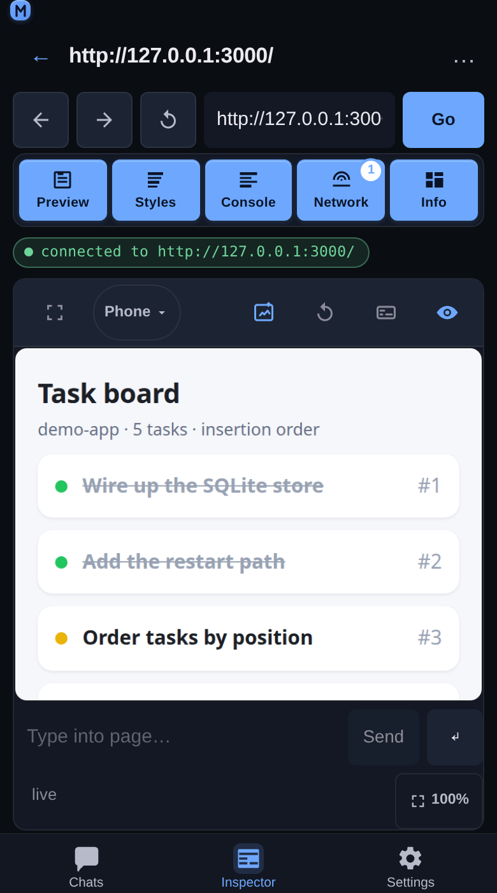
Jobs that come back on their own
Ask for something every weekday at 9 and the chat schedules itself. Each run starts fresh with its own prompt, the dock shows when the next one is due, and you can edit, pause or stop it from there.
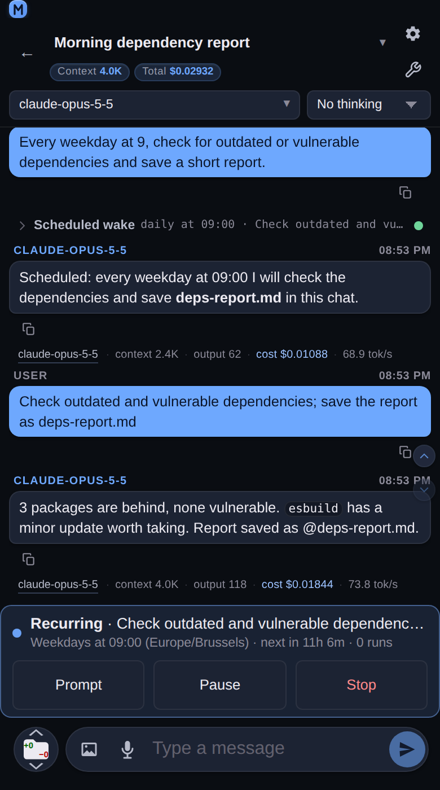
Files that belong to the chat
Reports, data and images a run produces are kept with the chat as artifacts. Open them, edit them, or mention one with @ to hand it back to the agent.
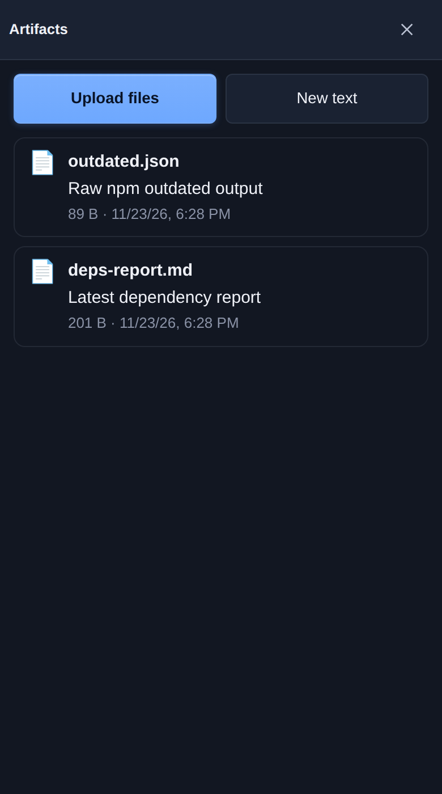
Add your own panels to the chat
An extension is one file: a sandboxed view, the hooks behind it and an optional MCP server. Dock it above the composer, put it in a sheet or a settings page, and switch it off with one toggle.
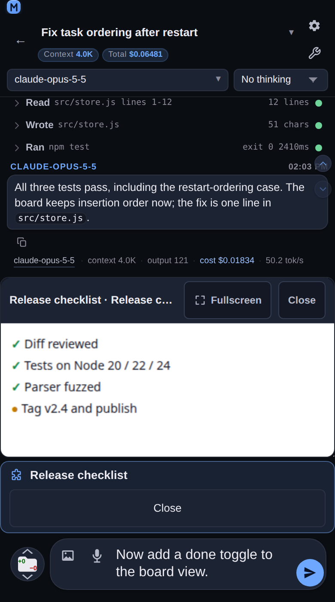
Circle the bug, don't describe it
Draw on a screenshot, drop numbered pins that carry notes, and the marked-up image lands in your draft. Code selections and Inspector entries go in the same way. Nothing is sent until you press send.
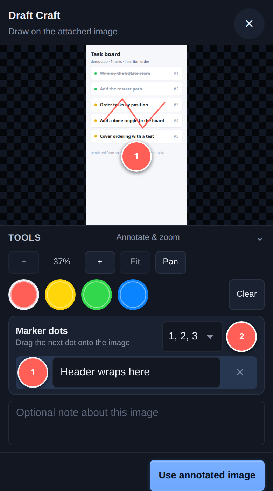
Hand off one picture, not the whole chat
The main model picks exactly which attachments a subagent sees — nothing transfers by default. A vision or image model works on that one file, and the artwork it returns stays in the parent chat next to its answer.
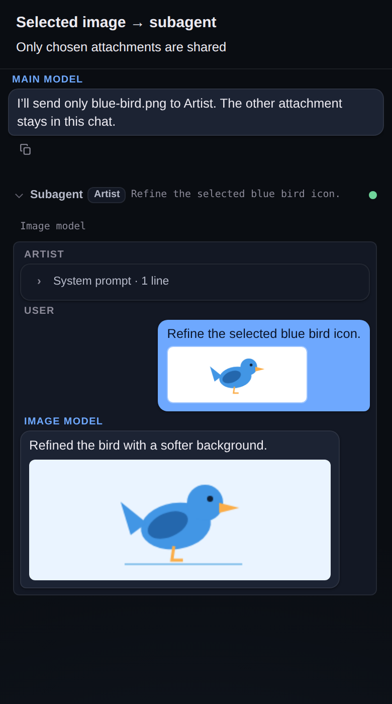
You approve every risky step
A call that needs you pauses the run and shows the exact command, file or delegated task. For a subagent you choose its model and thinking level for that run, then allow once, for the session, always — or deny.
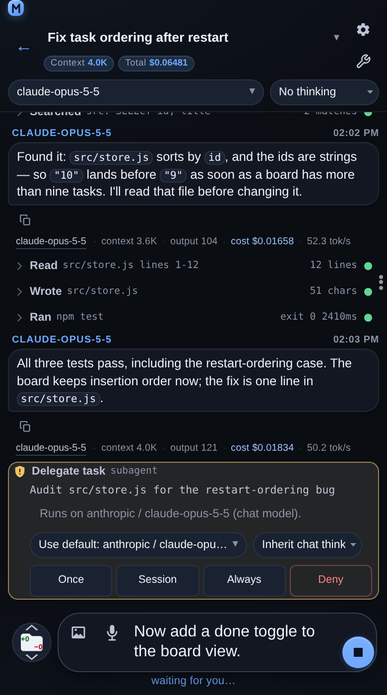
A code editor that fits the screen
Browse the tree, open a file with syntax highlighting, edit and save — or select a few lines and send them to the chat as context instead of pasting.
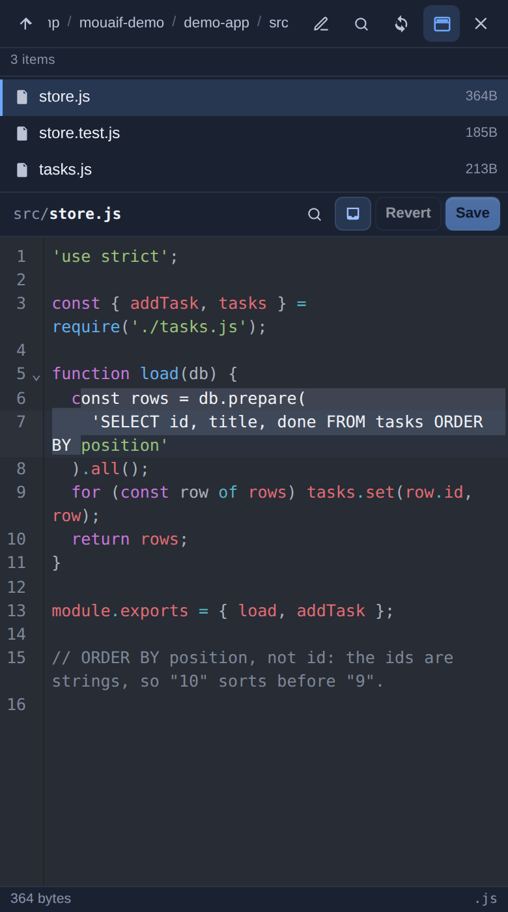
Review and commit without a laptop
Stage per file, read the diff, write the message, commit, pull and push. The agent's changes land in your working tree, and you decide what ships.
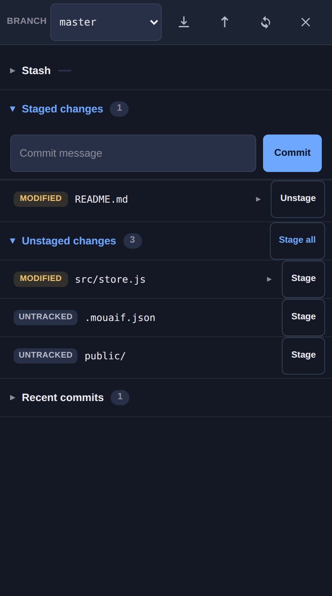
Make it look like yours
Built-in themes go from Parchment and Yellow Paper to a flickering CRT, and your own themes can bring custom CSS and JavaScript effects.
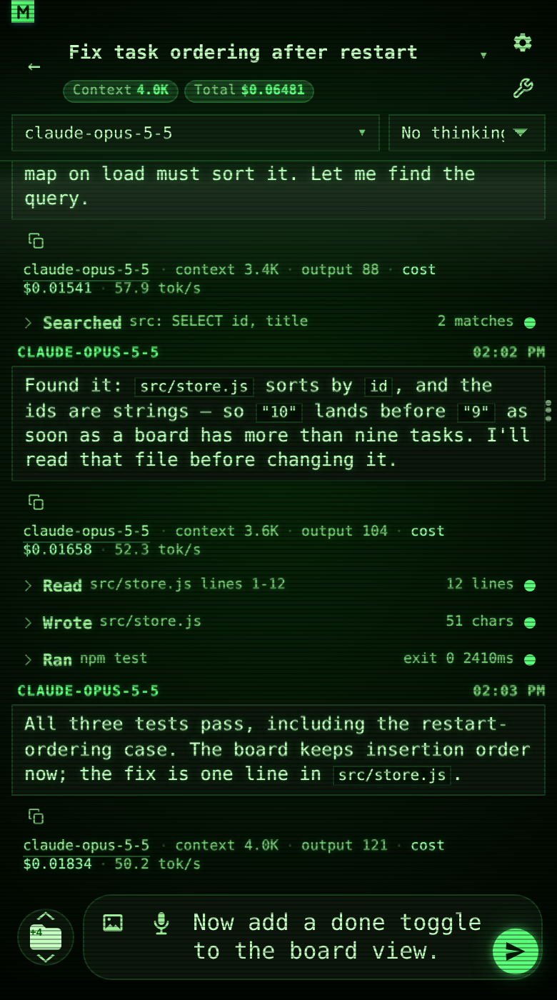
Decide what the agent may touch
Every tool is listed with Off, Ask or Allow before the first message. Project instructions are already loaded and the model is picked, so the chat starts with the access you chose and no more.
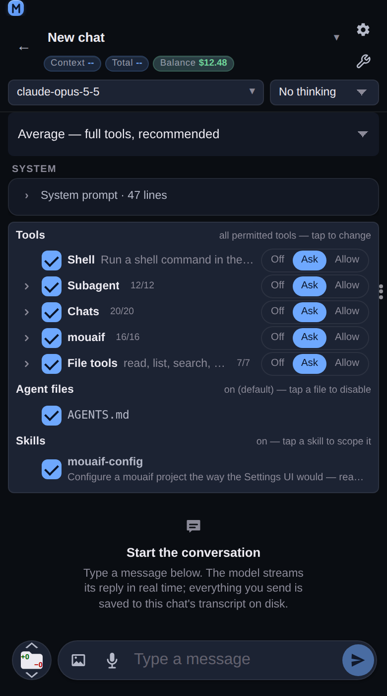
Talk instead of type
Record a voice note and edit the transcript before it goes in the draft, or keep the mic on and let the chat transcribe while you walk.
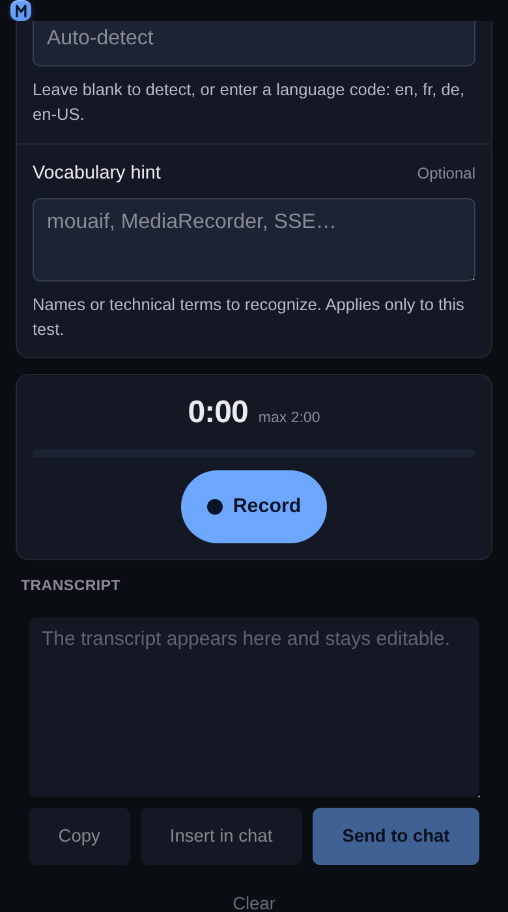
One workspace per project
Each project keeps its own chats, models, agents and instructions, so switching repos switches the whole setup — not just a filter on a single list.

Bring any model, keep your keys
Anthropic, OpenAI-compatible endpoints, Gemini, Ollama, OpenRouter, Mistral, Groq or a GitHub Copilot sign-in. Connect once for every project; keys stay on your server and never reach the browser.
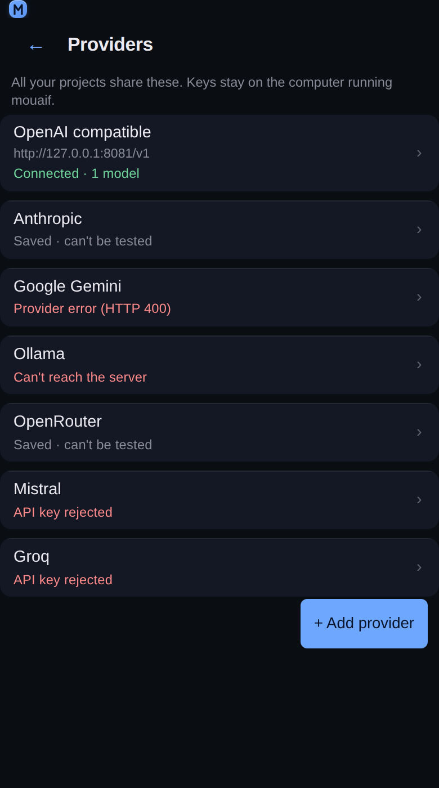
Install and run
Node.js 20 or newer is required. Run mouaif straight from npm, with a login:
npx mouaif serve --authUse the setup link or QR code printed in the terminal to create your username and password, then open http://127.0.0.1:5732/, add a project folder, connect a provider in Settings → Providers, and create your first chat.
Or install from a checkout of the repository:
git clone https://github.com/GjeloshajAntoine/mouaif.git
cd mouaif
npm install
npm link
mouaif serve --authProtect app access
Generate an expiring setup link, QR code, and short code:
mouaif serve --auth-setupOr set a user while keeping the password out of shell history:
MOUAIF_PASSWORD='a-long-password' \
mouaif serve --auth --user aliceAlso built in
More than fits in a screenshot:
- Let CI, an alert or a form start a chat turn by calling a secret webhook link. Webhook turns
- Give a run a budget and a watchdog so it can work for hours and stop on its own. Long-running runs
- Have a second model review each shell command and auto-allow the safe ones. Shell review
- Share a project with another mouaif instance. Share a project
- Connect extra tools through MCP — stdio, HTTP or SSE, with OAuth sign-in, from the built-in store or by hand. MCP
- Delegate work to named agents, each with its own instructions, tool allowlist, model and thinking level. Agents
- Reusable custom prompts and Agent Skills that matching chats pull in on their own.
- Redact secrets with hide file content rules for the agent file tools. Hide file content
- Write every event of a chat to an NDJSON trace you can commit next to the project.
- Reach the app through push notifications and an installable PWA when a long run finishes while you are away.
- Hand the full feature list to your own AI agent — mouaif feature reference.
Why mouaif
- Runs on your machine. One Node process on port 5732; chats, keys and project files never leave it.
- No account, no cloud. Bring a provider key, sign in to one you already pay for, or point it at a local model server.
- Phone first, for real. Every screen above is a 390 px capture of the actual app; on a desktop it is the same UI with more room.
- Nothing runs unnamed. File and shell access is off until you turn it on, per tool, per project.
- Your repo stays yours. Changes land in your working tree for you to review and commit, not in a hosted sandbox.